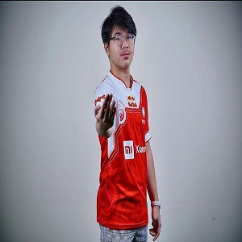

Leander Deusfiel Sorongan atau yang lebih dikenal dengan BTR Liquid merupakan professional player PUBG Mobile yang saat ini membela tim Bigetron Esports. Pria kelahiran 8 Agustus 2004 ini sebelum membela tim Bigetron Esports, Liquid lebih dahulu bermain di NFT Esports pada 2019 lalu. (1) Sebagai sniper yang handal, Liquid berhasil membawa tim-nya masuk dalam Top 5 PUBG Mobile Indonesia National Championship (PINC 2019). Kemudian pada tahun 2020 ia masuk ke Bigetron ION. Bigetron ION ialah tim lapis kedua dari tim Bigetron Esports, sedang tim utamanya ialah Bigetron Red Aliens. Akan tetapi seiring berjalannya waktu, ketika akan ada kompetisi ada peraturan bahwa satu tim tidak boleh mengirimkan dua skuat. Maka jadilah ketika PINC 2020 Bigetron ION berubah menjadi ION Esports. Liquid yang sangat ahli dalam sniper membuat lawan-lawannya takut. Skuat Bigetron Red Aliens. Tak terkecuali tim utama Bigetron Red Aliens (BTR RA). Bahkan ketika akan mengepung skuat ION Esports mereka berusaha melumpuhkan Liquid terlebih dahulu agar leluasa untuk menyerang. Tak disangka, diajang PUBG Mobile Indonesia National Championship (PINC) 2020 Liquid berhasil membawa tim-nya keluar sebagai juara pertama. Akan tetapi setelah itu ION Esports bubar dan player-player-nya pindah ke berbagai tim ada yang ke Evos dan ada yang masuk ke tim utama BTR RA. Liquid akhirnya masuk ke BTR RA untuk menggantikan peran BTR Alice di PMGC 2021 karena pada saat itu kondisi fisik Alice kurang bagus untuk bermain Pada saat itu skuat RA terdiri dari BTR Ryzen, Zuxxy, Luxxy, Microboy dan Liquid. Dengan begitu maka di skuat BTR RA terdapat dua player sniper yakni BTR Luxxy dan BTR Liquid. Akan tetapi akhirnya role sniper diberikan kepada BTR Liquid dan BTR Luxxy beralih ke role support yang ditinggalkan oleh Microboy. Karena awal 2021 usai PMGC Microboy memilih untuk keluar dari skuat BTR RA dan pindah ke Evos Esports.
-

Liquid
Leander Deusfiel Sorongan (BTR Liquid)